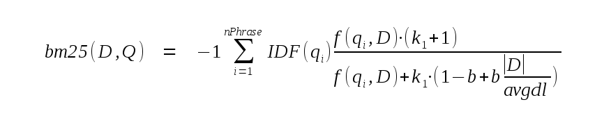

Choose any three.
|
|
Overview
1. Overview of FTS5
FTS5 is an SQLite virtual table module that provides full-text search functionality to database applications. In their most elementary form, full-text search engines allow the user to efficiently search a large collection of documents for the subset that contain one or more instances of a search term. The search functionality provided to world wide web users by Google is, amongst other things, a full-text search engine, as it allows users to search for all documents on the web that contain, for example, the term "fts5".
1.1. Overview of Functionality
To use FTS5, the user creates an FTS5 virtual table with one or more columns. For example:
CREATE VIRTUAL TABLE email USING fts5(sender, title, body); |
It is an error to add types, constraints or PRIMARY KEY declarations to a CREATE VIRTUAL TABLE statement used to create an FTS5 table. Once created, an FTS5 table may be populated using INSERT, UPDATE or DELETE statements like any other table. Like any other table with no PRIMARY KEY declaration, an FTS5 table has an implicit INTEGER PRIMARY KEY field named rowid.
Not shown in the example above is that there are also various options that may be provided to FTS5 as part of the CREATE VIRTUAL TABLE statement to configure various aspects of the new table. These may be used to modify the way in which the FTS5 table extracts terms from documents and queries, to create extra indexes on disk to speed up prefix queries, or to create an FTS5 table that acts as an index on content stored elsewhere.
Once populated, a full-text query may be executed on the contents of an FTS5 table by adding a MATCH constraint to the WHERE clause of a SELECT query. The expression to the right of the MATCH operator must be the name of the FTS5 table. The expression on the left must be a text value specifying the term to search for. For example:
-- Query for all rows that contain at least once instance of the term -- "fts5" (in any column). SELECT * FROM email WHERE email MATCH 'fts5'; |
By default, FTS5 full-text searches are case-independent. Like any other SQL query that does not contain an ORDER BY clause, the example above returns results in an arbitrary order. To sort results by relevance (most to least relevant), an ORDER BY may be added to a full-text query as follows:
-- Query for all rows that contain at least once instance of the term -- "fts5" (in any column). Return results in order from best to worst -- match. SELECT * FROM email WHERE email MATCH 'fts5' ORDER BY rank; |
As well as the column values and rowid of a matching row, an application may use FTS5 auxiliary functions to retrieve extra information regarding the matched row. For example, an auxiliary function may be used to retrieve a copy of a column value for a matched row with all instances of the matched term surrounded by html <b></b> tags. Auxiliary functions are invoked in the same way as SQLite scalar functions, except that the name of the FTS5 table is specified as the first argument. For example:
-- Query for rows that match "fts5". Return a copy of the "body" column -- of each row with the matches surrounded by <b></b> tags. SELECT highlight(email, 2, '<b>', '</b>') FROM email WHERE email MATCH 'fts5' |
A description of the available auxiliary functions, and more details regarding configuration of the special "rank" column, are available below. Custom auxiliary functions may also be implemented in C and registered with FTS5, just as custom SQL functions may be registered with the SQLite core.
As well as seaching for all rows that contain a term, FTS5 allows the user to search for rows that contain:
- any terms that begin with a specified prefix,
- "phrases" - sequences of terms or prefix terms that must feature in a document for it to match the query,
- sets of terms, prefix terms or phrases that appear within a specified proximity of each other (these are called "NEAR queries"), or
- boolean combinations of any of the above.
Such advanced searches are requested by providing a more complicated FTS5 query string as the text to the right of the MATCH operator. The full query syntax is described here.
1.2. Differences between FTS5 and FTS3/4
Also available is the similar but more mature FTS3/4 module. Apart from the exciting new name, FTS5 differs from FTS3/4 in the following ways:
-
FTS5 supports "ORDER BY rank" for returning results in order of decreasing relevancy.
-
FTS5 features an API allowing users to create custom auxiliary functions for advanced ranking and text processing applications. The special "rank" column may be mapped to a custom auxiliary function so that adding "ORDER BY rank" to a query works as expected.
-
FTS5 recognizes unicode separator characters and case equivalence by default. This is also possible using FTS3/4, but must be explicitly enabled.
-
The query syntax has been revised where necessary to remove ambiguities and to make it possible to escape special characters in query terms.
-
By default, FTS3/4 occasionally merges together two or more of the b-trees that make up its full-text index within an INSERT, UPDATE or DELETE statement executed by the user. This means that any operation on an FTS3/4 table may turn out to be surprisingly slow, as FTS3/4 may unpredictably choose to merge together two or more large b-trees within it. FTS5 uses incremental merging by default, which limits the amount of processing that may take place within any given INSERT, UPDATE or DELETE operation.
-
FTS5 uses significantly less memory when one or more terms in a query match a very large number of documents.
2. Full-text Query Syntax
The following block contains a summary of the FTS query syntax in BNF form. A detailed explanation follows.
<phrase> := string [*] <phrase> := <phrase> + <phrase> <neargroup> := NEAR ( <phrase> <phrase> ... [, N] ) <query> := [colname :] <phrase> <query> := [colname :] <neargroup> <query> := ( <query> ) <query> := <query> AND <query> <query> := <query> OR <query> <query> := <query> NOT <query> |
Within an FTS expression a string may be specified in one of two ways:
-
By enclosing it in double quotes ("). Within a string, any embedded double quote characters may be escaped SQL-style - by adding a second double-quote character.
-
As a bareword that includes no whitespace or reserved characters, and is not "AND", "OR" or "NOT" (case sensitive). Reserved characters are:
: ~ ! @ # $ % ^ & * ( ) + , =In other words, the top row of a regular US keyboard, the plus sign, comma and colon characters. Strings that include any of these characters must be quoted.
FTS queries are made up of phrases. A phrase is an ordered list of one or more tokens. A string is transformed into a phrase by passing it to the FTS table tokenizer. Two phrases can be concatenated into a single large phrase using the "+" operator. For example, assuming the tokenizer module being used tokenizes the input "one.two.three" to three separate tokens, the following three queries all specify the same phrase:
... MATCH '"one two three"' ... MATCH 'one + two + three' ... MATCH '"one two" + three' ... MATCH 'one.two.three' |
A phrase matches a document if the document contains at least one sub-sequence of tokens that matches the sequence of tokens that make up the phrase.
If a "*" character follows a string within an FTS expression, then the final token extracted from the string is marked as a prefix token. As you might expect, a prefix token matches any document token of which it is a prefix. For example, the first two queries in the following block will match any document that contains the token "one" immediately followed by the token "two" and then any token that begins with "thr".
... MATCH '"one two thr" * ' ... MATCH 'one + two + thr*' ... MATCH '"one two thr*"' -- May not work as expected! |
The final query in the block above may not work as expected. Because the "*" character is inside the double-quotes, it will be passed to the tokenizer, which will likely discard it (or perhaps, depending on the specific tokenizer in use, include it as part of the final token) instead of recognizing it as a special FTS character.
Two or more phrases may be grouped into a NEAR group. A NEAR group is specified by the token "NEAR" (case sensitive) followed by an open parenthesis character, followed by two or more whitespace separated phrases, optionally followed by a comma and the numeric parameter N, followed by a close parenthesis. For example:
... MATCH 'NEAR("one two" "three four", 10)'
... MATCH 'NEAR("one two" thr* + four)'
|
If no N parameter is supplied, it defaults to 10. A NEAR group matches a document if the document contains at least one clump of tokens that:
- contains at least one instance of each phrase, and
- for which the number of tokens between the end of the first phrase and the beginning of the last phrase in the clump is less than N.
For example:
CREATE VIRTUAL TABLE f USING fts5(x);
INSERT INTO f(rowid, x) VALUES(1, 'A B C D x x x E F x');
... MATCH 'NEAR(e d, 4)'; -- Matches!
... MATCH 'NEAR(e d, 3)'; -- Matches!
... MATCH 'NEAR(e d, 2)'; -- Does not match!
... MATCH 'NEAR("c d" "e f", 3)'; -- Matches!
... MATCH 'NEAR("c" "e f", 3)'; -- Does not match!
... MATCH 'NEAR(a d e, 6)'; -- Matches!
... MATCH 'NEAR(a d e, 5)'; -- Does not match!
... MATCH 'NEAR("a b c d" "b c" "e f", 4)'; -- Matches!
... MATCH 'NEAR("a b c d" "b c" "e f", 3)'; -- Does not match!
|
A single phrase or NEAR group may be restricted to matching text within a specified column of the FTS table by prefixing it with the column name followed by a colon character. Column names may be specified using either of the two forms described for strings above. Unlike strings that are part of phrases, column names are not passed to the tokenizer module. Column names are case-insensitive in the usual way for SQLite column names - upper/lower case equivalence is understood for ASCII-range characters only.
... MATCH 'colname : NEAR("one two" "three four", 10)'
... MATCH '"colname" : one + two + three'
|
Phrases and NEAR groups may be arranged into expressions using boolean operators. In order of precedence, from highest to lowest, the operators are:
| Operator | Function |
|---|---|
<query1> AND <query2>
| Matches if both query1 and query2 match. |
<query1> OR <query2>
| Matches if either query1 or query2 match. |
<query1> NOT <query2>
| Matches if query1 matches and query2 does not match. |
Parenthesis may be used to group expressions in order to modify operator precedence in the usual ways. For example:
-- Matches documents that contain at least one instance of either "one" -- or "two", but do not contain any instances of token "three". ... MATCH 'one OR two NOT three' -- Match all documents that contain the token "two" but not "three", or -- contain the token "one". ... MATCH 'one OR (two NOT three)' |
Phrases and NEAR groups may also be connected by implicit AND operators. For simplicity, these are not shown in the BNF grammar above. Essentially, any sequence of phrases or NEAR groups (including those restricted to matching specified columns) separated only by whitespace are handled as if there were an implicit AND operator between each pair of phrases or NEAR groups. Implicit AND operators are never inserted after or before an expression enclosed in parenthesis. For example:
... MATCH 'one two three' -- 'one AND two AND three' ... MATCH 'three "one two"' -- 'three AND "one two"' ... MATCH 'NEAR(one two) three' -- 'NEAR(one two) AND three' ... MATCH 'one OR two three' -- 'one OR two AND three' ... MATCH '(one OR two) three' -- Syntax error! ... MATCH 'func(one two)' -- Syntax error! |
3. FTS5 Table Creation and Initialization
Each argument specified as part of a "CREATE VIRTUAL TABLE ... USING fts5 ..." statement is either a column name or a configuration option. A column name consists of a single FTS5 bareword or a single string literal quoted in any manner acceptable to SQLite. A configuration option consists of an FTS5 bareword - the option name - followed by an "=" character, followed by the option value. The option value is specified using either a single FTS5 bareword or a string literal, again quoted in any manner acceptable to the SQLite core. Anything else is a syntax error.
It is an error to attempt to name an fts5 table column "rowid" or "rank", or to assign the same name to a column as is used by the table itself. This is not supported.
It is also an error to add a type, constraint specification or PRIMARY KEY clause to a column name in an FTS5 CREATE VIRTUAL TABLE statement.
A configuration option consists of an FTS5 bareword - the option name - followed by an "=" character, followed by a either an FTS5 bareword or a string literal. For example:
CREATE VIRTUAL TABLE mail USING fts5(sender, title, body, tokenize = 'porter ascii'); |
There are currently the following configuration options:
- The "tokenize" option, used to configure a custom tokenizer.
- The "prefix" option, used to add prefix indexes to an FTS5 table.
- The "content" option, used to make the FTS5 table an external content or contentless table.
- The "content_rowid" option, used to set the rowid field of an external content table.
3.1. Prefix Indexes
By default, FTS5 maintains a single index recording the location of each token instance within the document set. This means that querying for complete tokens is fast, as it requires a single lookup, but querying for a prefix token can be slow, as it requires a range scan. For example, to query for the prefix token "abc*" requires a range scan of all tokens greater than or equal to "abc" and less than "abd".
A prefix index is a separate index that records the location of all instances of prefix tokens of a certain length in characters used to speed up queries for prefix tokens. For example, optimizing a query for prefix token "abc*" requires a prefix index of three-character prefixes.
To add prefix indexes to an FTS5 table, the "prefix" option is set to either a single positive integer or a text value containing a white-space separated list of one or more positive integer values. A prefix index is created for each integer specified. If more than one "prefix" option is specified as part of a single CREATE VIRTUAL TABLE statement, all apply.
-- Two ways to create an FTS5 table that maintains prefix indexes for -- two and three character prefix tokens. CREATE VIRTUAL TABLE ft USING fts5(a, b, prefix='2 3'); CREATE VIRTUAL TABLE ft USING fts5(a, b, prefix=2, prefix=3); |
3.2. Tokenizers
The CREATE VIRTUAL TABLE "tokenize" option is used to configure the specific tokenizer used by the FTS5 table. The option argument must be either an FTS5 bareword, or an SQL text literal. The text of the argument is itself treated as a white-space series of one or more FTS5 barewords or SQL text literals. The first of these is the name of the tokenizer to use. The second and subsequent list elements, if they exist, are arguments passed to the tokenizer implementation.
Unlike option values and column names, SQL text literals intended as tokenizers must be quoted using single quote characters. For example:
-- The following are all equivalent CREATE VIRTUAL TABLE t1 USING fts5(x, tokenize = 'porter ascii'); CREATE VIRTUAL TABLE t1 USING fts5(x, tokenize = "porter ascii"); CREATE VIRTUAL TABLE t1 USING fts5(x, tokenize = "'porter' 'ascii'"); CREATE VIRTUAL TABLE t1 USING fts5(x, tokenize = '''porter'' ''ascii'''); -- But this will fail: CREATE VIRTUAL TABLE t1 USING fts5(x, tokenize = '"porter" "ascii"'); -- This will fail too: CREATE VIRTUAL TABLE t1 USING fts5(x, tokenize = 'porter' 'ascii'); |
FTS5 features three built-in tokenizer modules, described in subsequent sections:
- The unicode61 tokenizer, based on the Unicode 6.1 standard. This is the default.
- The ascii tokenizer, which assumes all characters outside of the ASCII codepoint range (0-127) are to be treated as token characters.
- The porter tokenizer, which implements the porter stemming algorithm.
It is also possible to create custom tokenizers for FTS5. The API for doing so is described here.
3.2.1. Unicode61 Tokenizer
The unicode tokenizer classifies all unicode characters as either "separator" or "token" characters. By default all space and punctuation characters, as defined by Unicode 6.1, are considered separators, and all other characters as token characters. Each contiguous run of one or more token characters is considered to be a token. The tokenizer is case-insensitive according to the rules defined by Unicode 6.1.
By default, diacritics are removed from all Latin script characters. This means, for example, that "A", "a", "À", "à", "Â" and "â" are all considered to be equivalent.
Any arguments following "unicode61" in the token specification are treated as a list of alternating option names and values. Unicode61 supports the following options:
| Option | Usage |
|---|---|
| remove_diacritics | This option should be set to "0" or "1". If it is set (the default), diacritics are removed from all latin script characters as described above. If it is clear, they are not. |
| tokenchars | This option is used to specify additional unicode characters that should be considered token characters, even if they are white-space or punctuation characters according to Unicode 6.1. All characters in the string that this option is set to are considered token characters. |
| separators | This option is used to specify additional unicode characters that should be considered as separator characters, even if they are token characters according to Unicode 6.1. All characters in the string that this option is set to are considered separators. |
For example:
-- Create an FTS5 table that does not remove diacritics from Latin
-- script characters, and that considers hyphens and underscore characters
-- to be part of tokens.
CREATE VIRTUAL TABLE ft USING fts5(a, b,
tokenize = "unicode61 remove_diacritics 0 tokenchars '-_'"
);
|
3.2.2. Ascii Tokenizer
The Ascii tokenizer is similar to the Unicode61 tokenizer, except that:
- All non-ASCII characters (those with codepoints greater than 127) are always considered token characters. If any non-ASCII characters are specified as part of the separators option, they are ignored.
- Case-folding is only performed for ASCII characters. So while "A" and "a" are considered to be equivalent, "Ã" and "ã" are distinct.
- The remove_diacritics option is not supported.
For example:
-- Create an FTS5 table that uses the ascii tokenizer, but does not
-- consider numeric characters to be part of tokens.
CREATE VIRTUAL TABLE ft USING fts5(a, b,
tokenize = "ascii separators '0123456789'"
);
|
3.2.3. Porter Tokenizer
The porter tokenizer is a wrapper tokenizer. It takes the output of some other tokenizer and applies the porter stemming algorithm to each token before it returns it to FTS5. This allows search terms like "correction" to match similar words such as "corrected" or "correcting". The porter stemmer algorithm is designed for use with English language terms only - using it with other languages may or may not improve search utility.
By default, the porter tokenizer operates as a wrapper around the default tokenizer (unicode61). Or, if one or more extra arguments are added to the "tokenize" option following "porter", they are treated as a specification for the underlying tokenizer that the porter stemmer uses. For example:
-- Two ways to create an FTS5 table that uses the porter tokenizer to -- stem the output of the default tokenizer (unicode61). CREATE VIRTUAL TABLE t1 USING fts5(x, tokenize = porter); CREATE VIRTUAL TABLE t1 USING fts5(x, tokenize = 'porter unicode61'); -- A porter tokenizer used to stem the output of the unicode61 tokenizer, -- with diacritics removed before stemming. CREATE VIRTUAL TABLE t1 USING fts5(x, tokenize = 'porter unicode61 remove_diacritics 1'); |
3.3. External Content and Contentless Tables
Normally, when a row is inserted into an FTS5 table, as well as the various full-text index entries and other data a copy of the row is stored in a private table managed by the FTS5 module. When column values are requested from the FTS5 table by the user or by an auxiliary function implementation, they are read from this private table. The "content" option may be used to create an FTS5 table that stores only FTS full-text index entries. Because the column values themselves are usually much larger than the associated full-text index entries, this can save significant database space.
There are two ways to use the "content" option:
- By setting it to an empty string to create a contentless FTS5 table. In this case FTS5 assumes that the original column values are unavailable to it when processing queries. Full-text queries and some auxiliary functions can still be used, but no column values apart from the rowid may be read from the table.
- By setting it to the name of a database object (table, virtual table or view) that may be queried by FTS5 at any time to retrieve the column values. This is known as an "external content" table. In this case all FTS5 functionality may be used, but it is the responsibility of the user to ensure that the contents of the full-text index are consistent with the named database object. If they are not, query results may be unpredictable.
3.3.1. Contentless Tables
A contentless FTS5 table is created by setting the "content" option to an empty string. For example:
CREATE VIRTUAL TABLE f1 USING fts5(a, b, c, content=''); |
Contentless FTS5 tables do not support UPDATE or DELETE statements, or INSERT statements that do not supply a non-NULL value for the rowid field. Rows may be deleted from a contentless table using an FTS5 delete command.
Attempting to read any column value except the rowid from a contentless FTS5 table returns an SQL NULL value.
3.3.2. External Content Tables
An external content FTS5 table is created by setting the content option to the name of a table, virtual table or view (hereafter the "content table") within the same database. Whenever column values are required by FTS5, it queries the content table as follows, with the rowid of the row for which values are required bound to the SQL variable:
SELECT * FROM <content> WHERE <content_rowid> = ?; |
In the above, <content> is replaced by the name of the content table. By default, <content_rowid> is replaced by the literal text "rowid". Or, if the "content_rowid" option is set within the CREATE VIRTUAL TABLE statement, by the value of that option.
The "*" in the above query must expand to a set of columns consisting of the <column_rowid> column followed by each indexed column, in the same order as they are present in the external content fts5 table.
The content table may also be queried as follows:
SELECT * FROM <content> ORDER BY <content_rowid> ASC; SELECT * FROM <content> ORDER BY <content_rowid> DESC; |
It is still the responsibility of the user to ensure that the contents of an external content FTS5 table are kept up to date with the content table. One way to do this is with triggers. For example:
-- Create a table. And an external content fts5 table to index it.
CREATE TABLE tbl(a INTEGER PRIMARY KEY, b, c);
CREATE VIRTUAL TABLE fts_idx USING fts5(b, c, content='tbl', content_rowid='a');
-- Triggers to keep the FTS index up to date.
CREATE TRIGGER tbl_ai AFTER INSERT ON tbl BEGIN
INSERT INTO fts_idx(rowid, b, c) VALUES (new.a, new.b, new.c);
END;
CREATE TRIGGER tbl_ad AFTER DELETE ON tbl BEGIN
INSERT INTO fts_idx(fts_idx, rowid, b, c) VALUES('delete', old.a, old.b, old.c);
END;
CREATE TRIGGER tbl_au AFTER UPDATE ON tbl BEGIN
INSERT INTO fts_idx(fts_idx, rowid, b, c) VALUES('delete', old.a, old.b, old.c);
INSERT INTO fts_idx(rowid, b, c) VALUES (new.a, new.b, new.c);
END;
|
4. Auxiliary Functions
Auxiliary functions are similar to SQL scalar functions, except that they may only be used within full-text queries (those that use the MATCH operator) on an FTS5 table. Their results are calculated based not only on the arguments passed to them, but also on the current match and matched row. For example, an auxiliary function may return a numeric value indicating the accuracy of the match (see the bm25() function), or a fragment of text from the matched row that contains one or more instances of the search terms (see the snippet() function).
To invoke an auxiliary function, the name of the FTS5 table should be specified as the first argument. Other arguments may follow the first, depending on the specific auxiliary function being invoked. For example, to invoke the "highlight" function:
SELECT highlight(email, 2, '<b>', '</b>') FROM email WHERE email MATCH 'fts5' |
The built-in auxiliary functions provided as part of FTS5 are described in the following section. Applications may also implement custom auxiliary functions in C.
4.1. Built-in Auxiliary Functions
FTS5 provides three built-in auxiliary functions:
- The bm25() auxiliary function returns a real value reflecting the accuracy of the current match. Better matches are assigned numerically lower values.
- The highlight() auxiliary function returns a copy of the text from one of the columns of the current match with each instance of a queried term within the result surrounded by specified markup (for example "<b>" and "</b>").
- The snippet() auxiliary function selects a short fragment of text from one of the columns of the matched row and returns it with each instance of a queried term surrounded by markup in the same manner as the highlight() function. The fragment of text is selected so as to maximize the number of queried terms it contains.
4.1.1. The bm25() function
The built-in auxiliary function bm25() returns a real value indicating how well the current row matches the full-text query. The better the match, the larger the value returned. A query such as the following may be used to return matches in order from best to worst match:
SELECT * FROM fts WHERE fts MATCH ? ORDER BY bm25(fts) |
In order to calculate a documents score, the full-text query is separated into its component phrases. The bm25 score for document D and query Q is then calculated as follows:

In the above, nPhrase is the number of phrases in the query. |D| is the number of tokens in the current document, and avgdl is the average number of tokens in all documents within the FTS5 table. k1 and b are both constants, hard-coded at 1.2 and 0.75 respectively.
The "-1" term at the start of the formula is not found in most implementations of the BM25 algorithm. Without it, a better match is assigned a numerically higher BM25 score. Since the default sorting order is "ascending", this means that appending "ORDER BY bm25(fts)" to a query would cause results to be returned in order from worst to best. The "DESC" keyword would be required in order to return the best matches first. In order to avoid this pitfall, the FTS5 implementation of BM25 multiplies the result by -1 before returning it, ensuring that better matches are assigned numerically lower scores.
IDF(qi) is the inverse-document-frequency of query phrase i. It is calculated as follows, where N is the total number of rows in the FTS5 table and n(qi) is the total number of rows that contain at least one instance of phrase i:
Finally, f(qi,D) is the phrase frequency of phrase i. By default, this is simply the number of occurrences of the phrase within the current row. However, by passing extra real value arguments to the bm25() SQL function, each column of the table may be assigned a different weight and the phrase frequency calculated as follows:
where wc is the weight assigned to column c and n(qi,c) is the number of occurrences of phrase i in column c of the current row. The first argument passed to bm25() following the table name is the weight assigned to the leftmost column of the FTS5 table. The second is the weight assigned to the second leftmost column, and so on. If there are not enough arguments for all table columns, remaining columns are assigned a weight of 1.0. If there are too many trailing arguments, the extras are ignored. For example:
-- Assuming the following schema: CREATE VIRTUAL TABLE email USING fts5(sender, title, body); -- Return results in bm25 order, with each phrase hit in the "sender" -- column considered the equal of 10 hits in the "body" column, and -- each hit in the "title" column considered as valuable as 5 hits in -- the "body" column. SELECT * FROM email WHERE email MATCH ? ORDER BY bm25(email, 10.0, 5.0); |
Refer to wikipedia for more information regarding BM25 and its variants.
4.1.2. The highlight() function
The highlight() function returns a copy of the text from a specified column of the current row with extra markup text inserted to mark the start and end of phrase matches.
The highlight() must be invoked with exactly three arguments following the table name. To be interpreted as follows:
- An integer indicating the index of the FTS table column to read the text from. Columns are numbered from left to right starting at zero.
- The text to insert before each phrase match.
- The text to insert after each phrase match.
For example:
-- Return a copy of the text from the leftmost column of the current -- row, with phrase matches marked using html "b" tags. SELECT highlight(fts, 0, '<b>' '</b>') FROM fts WHERE fts MATCH ? |
In cases where two or more phrase instances overlap (share one or more tokens in common), a single open and close marker is inserted for each set of overlapping phrases. For example:
-- Assuming this:
CREATE VIRTUAL TABLE ft USING fts5(a);
INSERT INTO ft VALUES('a b c x c d e');
INSERT INTO ft VALUES('a b c c d e');
INSERT INTO ft VALUES('a b c d e');
-- The following SELECT statement returns these three rows:
-- '[a b c] x [c d e]'
-- '[a b c] [c d e]'
-- '[a b c d e]'
SELECT highlight(ft, 0, '[', ']') FROM ft WHERE ft MATCH 'a+b+c AND c+d+e';
|
4.1.3. The snippet() function
The snippet() function is similar to highlight(), except that instead of returning entire column values, it automatically selects and extracts a short fragment of document text to process and return. The snippet() function must be passed five parameters following the table name argument:
- An integer indicating the index of the FTS table column to select the returned text from. Columns are numbered from left to right starting at zero. A negative value indicates that the column should be automatically selected.
- The text to insert before each phrase match within the returned text.
- The text to insert after each phrase match within the returned text.
- The text to add to the start or end of the selected text to indicate that the returned text does not occur at the start or end of its column, respectively.
- The maximum number of tokens in the returned text. This must be greater than zero and equal to or less than 64.
4.2. Sorting by Auxiliary Function Results
All FTS5 tables feature a special hidden column named "rank". If the current query is not a full-text query (i.e. if it does not include a MATCH operator), the value of the "rank" column is always NULL. Otherwise, in a full-text query, column rank contains by default the same value as would be returned by executing the bm25() auxiliary function with no trailing arguments.
The difference between reading from the rank column and using the bm25() function directly within the query is only significant when sorting by the returned value. In this case, using "rank" is faster than using bm25().
-- The following queries are logically equivalent. But the second may -- be faster, particularly if the caller abandons the query before -- all rows have been returned (or if the queries were modified to -- include LIMIT clauses). SELECT * FROM fts WHERE fts MATCH ? ORDER BY bm25(fts); SELECT * FROM fts WHERE fts MATCH ? ORDER BY rank; |
Instead of using bm25() with no trailing arguments, the specific auxiliary function mapped to the rank column may be configured either on a per-query basis, or by setting a different persistent default for the FTS table.
In order to change the mapping of the rank column for a single query, a term similar to the following is added to the WHERE clause of a query:
rank MATCH 'auxiliary-function-name(arg1, arg2, ...)' |
The right-hand-side of the MATCH clause must be a constant expression that evaluates to a string consisting of the auxiliary function to invoke, followed by zero or more comma separated arguments within parenthesis. Arguments must be SQL literals. For example:
-- The following queries are logically equivalent. But the second may -- be faster. See above. SELECT * FROM fts WHERE fts MATCH ? ORDER BY bm25(fts, 10.0, 5.0); SELECT * FROM fts WHERE fts MATCH ? AND rank MATCH 'bm25(10.0, 5.0)' ORDER BY rank; |
The default mapping of the rank column for a table may be modified using the FTS5 rank configuration option.
5. Special INSERT Commands
5.1. The 'automerge' Configuration Option
Instead of using a single data structure on disk to store the full-text index, FTS5 uses a series of b-trees. Each time a new transaction is committed, a new b-tree containing the contents of the committed transaction is written into the database file. When the full-text index is queried, each b-tree must be queried individually and the results merged before being returned to the user.
In order to prevent the number of b-trees in the database from becoming too large (slowing down queries), smaller b-trees are periodically merged into single larger b-trees containing the same data. By default, this happens automatically within INSERT, UPDATE or DELETE statements that modify the full-text index. The 'automerge' parameter determines how many smaller b-trees are merged together at a time. Setting it to a small value can speed up queries (as they have to query and merge the results from fewer b-trees), but can also slow down writing to the database (as each INSERT, UPDATE or DELETE statement has to do more work as part of the automatic merging process).
Each of the b-trees that make up the full-text index is assigned to a "level" based on its size. Level-0 b-trees are the smallest, as they contain the contents of a single transaction. Higher level b-trees are the result of merging two or more level-0 b-trees together and so they are larger. FTS5 begins to merge b-trees together once there exist M or more b-trees with the same level, where M is the value of the 'automerge' parameter.
The maximum allowed value for the 'automerge' parameter is 16. The default value is 4. Setting the 'automerge' parameter to 0 disables the automatic incremental merging of b-trees altogether.
INSERT INTO ft(ft, rank) VALUES('automerge', 8);
|
5.2. The 'crisismerge' Configuration Option
The 'crisismerge' option is similar to 'automerge', in that it determines how and how often the component b-trees that make up the full-text index are merged together. Once there exist C or more b-trees on a single level within the full-text index, where C is the value of the 'crisismerge' option, all b-trees on the level are immediately merged into a single b-tree.
The difference between this option and the 'automerge' option is that when the 'automerge' limit is reached FTS5 only begins to merge the b-trees together. Most of the work is performed as part of subsequent INSERT, UPDATE or DELETE operations. Whereas when the 'crisismerge' limit is reached, the offending b-trees are all merged immediately. This means that an INSERT, UPDATE or DELETE that triggers a crisis-merge may take a long time to complete.
The default 'crisismerge' value is 16. There is no maximum limit. Attempting to set the 'crisismerge' parameter to a value of 0 or 1 is equivalent to setting it to the default value (16). It is an error to attempt to set the 'crisismerge' option to a negative value.
INSERT INTO ft(ft, rank) VALUES('crisismerge', 16);
|
5.3. The 'delete' Command
This command is only available with external content and contentless tables. It is used to delete the index entries associated with a single row from the full-text index. This command and the delete-all command are the only ways to remove entries from the full-text index of a contentless table.
In order to use this command to delete a row, the text value 'delete' must be inserted into the special column with the same name as the table. The rowid of the row to delete is inserted into the rowid column. The values inserted into the other columns must match the values currently stored in the table. For example:
-- Insert a row with rowid=14 into the fts5 table.
INSERT INTO ft(rowid, a, b, c) VALUES(14, $a, $b, $c);
-- Remove the same row from the fts5 table.
INSERT INTO ft(ft, rowid, a, b, c) VALUES('delete', 14, $a, $b, $c);
|
If the values "inserted" into the text columns as part of a 'delete' command are not the same as those currently stored within the table, the results may be unpredictable.
The reason for this is easy to understand: When a document is inserted into the FTS5 table, an entry is added to the full-text index to record the position of each token within the new document. When a document is removed, the original data is required in order to determine the set of entries that need to be removed from the full-text index. So if the data supplied to FTS5 when a row is deleted using this command is different from that used to determine the set of token instances when it was inserted, some full-text index entries may not be correctly deleted, or FTS5 may try to remove index entries that do not exist. This can leave the full-text index in an unpredictable state, making future query results unreliable.
5.4. The 'delete-all' Command
This command is only available with external content and contentless tables. It deletes all entries from the full-text index.
INSERT INTO ft(ft) VALUES('delete-all');
|
5.5. The 'integrity-check' Command
This command is used to verify that the full-text index is consistent with the contents of the FTS5 table or content table. It is not available with contentless tables.
The integrity-check command is invoked by inserting the text value 'integrity-check' into the special column with the same name as the FTS5 table. For example:
INSERT INTO ft(ft) VALUES('integrity-check');
|
If the full-text index is consistent with the contents of the table, the INSERT used to invoke the integrity-check command succeeds. Or, if any discrepancy is found, it fails with an SQLITE_CORRUPT_VTAB error.
5.6. The 'optimize' Command
This command merges all individual b-trees that currently make up the full-text index into a single large b-tree structure. This ensures that the full-text index consumes the mimimum space within the database and is in the fastest form to query.
Refer to the documentation for the FTS5 automerge option for more details regarding the relationship between the full-text index and its component b-trees.
INSERT INTO ft(ft) VALUES('optimize');
|
5.7. The 'pgsz' Configuration Option
This command is used to set the persistent "pgsz" option.
The full-text index maintained by FTS5 is stored as a series of fixed-size blobs in a database table. It is not strictly necessary for all blobs that make up a full-text index to be the same size. The pgsz option determines the size of all blobs created by subsequent index writers. The default value is 1000.
INSERT INTO ft(ft, rank) VALUES('pgsz', 4072);
|
5.8. The 'rank' Configuration Option
This command is used to set the persistent "rank" option.
The rank option is used to change the default auxiliary function mapping for the rank column. The option should be set to a text value in the same format as described for "rank MATCH ?" terms above. For example:
INSERT INTO ft(ft, rank) VALUES('rank', 'bm25(10.0, 5.0)');
|
5.9. The 'rebuild' Command
This command first deletes the entire full-text index, then rebuilds it based on the contents of the table or content table. It is not available with contentless tables.
INSERT INTO ft(ft) VALUES('rebuild');
|
6. Extending FTS5
FTS5 features APIs allowing it to be extended by:
- Adding new auxiliary functions implemented in C, and
- Adding new tokenizers, also implemented in C.
The built-in tokenizers and auxiliary functions described in this document are all implemented using the publicly available API described below.
Before a new auxiliary function or tokenizer implementation may be registered with FTS5, an application must obtain a pointer to the "fts5_api" structure. There is one fts5_api structure for each database connection with which the FTS5 extension is registered. To obtain the pointer, the application invokes the SQL user-defined function fts5(), which returns a blob value containing the pointer to the fts5_api structure for the connection. The following example code demonstrates the technique:
/*
** Return a pointer to the fts5_api pointer for database connection db.
** If an error occurs, return NULL and leave an error in the database
** handle (accessible using sqlite3_errcode()/errmsg().
*/
fts5_api *fts5_api_from_db(sqlite3 *db){
fts5_api *pRet = 0;
sqlite3_stmt *pStmt = 0;
if( SQLITE_OK==sqlite3_prepare(db, "SELECT fts5()", -1, &pStmt, 0)
&& SQLITE_ROW==sqlite3_step(pStmt)
&& sizeof(pRet)==sqlite3_column_bytes(pStmt, 0)
){
memcpy(&pRet, sqlite3_column_blob(pStmt, 0), sizeof(pRet));
}
sqlite3_finalize(pStmt);
return pRet;
}
|
The fts5_api structure is defined as follows. It exposes three methods, one each for registering new auxiliary functions and tokenizers, and one for retrieving existing tokenizer. The latter is intended to facilitate the implementation of "tokenizer wrappers" similar to the built-in porter tokenizer.
typedef struct fts5_api fts5_api;
struct fts5_api {
int iVersion; /* Currently always set to 1 */
/* Create a new tokenizer */
int (*xCreateTokenizer)(
fts5_api *pApi,
const char *zName,
void *pContext,
fts5_tokenizer *pTokenizer,
void (*xDestroy)(void*)
);
/* Find an existing tokenizer */
int (*xFindTokenizer)(
fts5_api *pApi,
const char *zName,
void **ppContext,
fts5_tokenizer *pTokenizer
);
/* Create a new auxiliary function */
int (*xCreateFunction)(
fts5_api *pApi,
const char *zName,
void *pContext,
fts5_extension_function xFunction,
void (*xDestroy)(void*)
);
};
|
To invoke a method of the fts5_api object, the fts5_api pointer itself should be passed as the methods first argument followed by the other, method specific, arguments. For example:
rc = pFts5Api->xCreateTokenizer(pFts5Api, ... other args ...); |
The fts5_api structure methods are described individually in the following sections.
6.1. Custom Tokenizers
To create a custom tokenizer, an application must implement three functions: a tokenizer constructor (xCreate), a destructor (xDelete) and a function to do the actual tokenization (xTokenize). The type of each function is as for the member variables of the fts5_tokenizer struct:
typedef struct Fts5Tokenizer Fts5Tokenizer;
typedef struct fts5_tokenizer fts5_tokenizer;
struct fts5_tokenizer {
int (*xCreate)(void*, const char **azArg, int nArg, Fts5Tokenizer **ppOut);
void (*xDelete)(Fts5Tokenizer*);
int (*xTokenize)(Fts5Tokenizer*,
void *pCtx,
const char *pText, int nText,
int (*xToken)(
void *pCtx, /* Copy of 2nd argument to xTokenize() */
const char *pToken, /* Pointer to buffer containing token */
int nToken, /* Size of token in bytes */
int iStart, /* Byte offset of token within input text */
int iEnd /* Byte offset of end of token within input text */
)
);
};
|
When an FTS5 table uses the custom tokenizer, the FTS5 core calls xCreate() once to create a tokenizer, then xTokenize() zero or more times to tokenize strings, then xDelete() to free any resources allocated by xCreate(). More specifically:
- xCreate:
This function is used to allocate and inititalize a tokenizer instance. A tokenizer instance is required to actually tokenize text.
The first argument passed to this function is a copy of the (void*) pointer provided by the application when the fts5_tokenizer object was registered with FTS5 (the third argument to xCreateTokenizer()). The second and third arguments are an array of nul-terminated strings containing the tokenizer arguments, if any, specified following the tokenizer name as part of the CREATE VIRTUAL TABLE statement used to create the FTS5 table.
The final argument is an output variable. If successful, (*ppOut) should be set to point to the new tokenizer handle and SQLITE_OK returned. If an error occurs, some value other than SQLITE_OK should be returned. In this case, fts5 assumes that the final value of *ppOut is undefined.
- xDelete:
This function is invoked to delete a tokenizer handle previously allocated using xCreate(). Fts5 guarantees that this function will be invoked exactly once for each successful call to xCreate().
- xTokenize:
This function is expected to tokenize the nText byte string indicated by argument pText. pText may not be nul-terminated. The first argument passed to this function is a pointer to an Fts5Tokenizer object returned by an earlier call to xCreate().
For each token in the input string, the supplied callback xToken() must be invoked. The first argument to it should be a copy of the pointer passed as the second argument to xTokenize(). The next two arguments are a pointer to a buffer containing the token text, and the size of the token in bytes. The 4th and 5th arguments are the byte offsets of the first byte of and first byte immediately following the text from which the token is derived within the input.
FTS5 assumes the xToken() callback is invoked for each token in the order that they occur within the input text.
If an xToken() callback returns any value other than SQLITE_OK, then the tokenization should be abandoned and the xTokenize() method should immediately return a copy of the xToken() return value. Or, if the input buffer is exhausted, xTokenize() should return SQLITE_OK. Finally, if an error occurs with the xTokenize() implementation itself, it may abandon the tokenization and return any error code other than SQLITE_OK or SQLITE_DONE.
6.2. Custom Auxiliary Functions
Implementing a custom auxiliary function is similar to implementing an scalar SQL function. The implementation should be a C function of type fts5_extension_function, defined as follows:
typedef struct Fts5ExtensionApi Fts5ExtensionApi; typedef struct Fts5Context Fts5Context; typedef void (*fts5_extension_function)( const Fts5ExtensionApi *pApi, /* API offered by current FTS version */ Fts5Context *pFts, /* First arg to pass to pApi functions */ sqlite3_context *pCtx, /* Context for returning result/error */ int nVal, /* Number of values in apVal[] array */ sqlite3_value **apVal /* Array of trailing arguments */ ); |
The implementation is registered with the FTS5 module by calling the xCreateFunction() method of the fts5_api object. If there is already an auxiliary function with the same name, it is replaced by the new function. If a non-NULL xDestroy parameter is passed to xCreateFunction(), it is invoked with a copy of the pContext pointer passed as the only argument when the database handle is closed or when the registered auxiliary function is replaced.
The final three arguments passed to the auxiliary function callback are similar to the three arguments passed to the implementation of a scalar SQL function. All arguments except the first passed to the auxiliary function are available to the implementation in the apVal[] array. The implementation should return a result or error via the content handle pCtx.
The first argument passed to an auxiliary function callback is a pointer to a structure containing methods that may be invoked in order to obtain information regarding the current query or row. The second argument is an opaque handle that should be passed as the first argument to any such method invocation. For example, the following auxiliary function definition returns the total number of tokens in all columns of the current row:
/*
** Implementation of an auxiliary function that returns the number
** of tokens in the current row (including all columns).
*/
static void column_size_imp(
const Fts5ExtensionApi *pApi,
Fts5Context *pFts,
sqlite3_context *pCtx,
int nVal,
sqlite3_value **apVal
){
int rc;
int nToken;
rc = pApi->xColumnSize(pFts, -1, &nToken);
if( rc==SQLITE_OK ){
sqlite3_result_int(pCtx, nToken);
}else{
sqlite3_result_error_code(pCtx, rc);
}
}
|
The following section describes the API offered to auxiliary function implementations in detail. Further examples may be found in the "fts5_aux.c" file of the source code.
6.2.1. Custom Auxiliary Functions API Reference
struct Fts5ExtensionApi {
int iVersion; /* Currently always set to 1 */
void *(*xUserData)(Fts5Context*);
int (*xColumnCount)(Fts5Context*);
int (*xRowCount)(Fts5Context*, sqlite3_int64 *pnRow);
int (*xColumnTotalSize)(Fts5Context*, int iCol, sqlite3_int64 *pnToken);
int (*xTokenize)(Fts5Context*,
const char *pText, int nText, /* Text to tokenize */
void *pCtx, /* Context passed to xToken() */
int (*xToken)(void*, const char*, int, int, int) /* Callback */
);
int (*xPhraseCount)(Fts5Context*);
int (*xPhraseSize)(Fts5Context*, int iPhrase);
int (*xInstCount)(Fts5Context*, int *pnInst);
int (*xInst)(Fts5Context*, int iIdx, int *piPhrase, int *piCol, int *piOff);
sqlite3_int64 (*xRowid)(Fts5Context*);
int (*xColumnText)(Fts5Context*, int iCol, const char **pz, int *pn);
int (*xColumnSize)(Fts5Context*, int iCol, int *pnToken);
int (*xQueryPhrase)(Fts5Context*, int iPhrase, void *pUserData,
int(*)(const Fts5ExtensionApi*,Fts5Context*,void*)
);
int (*xSetAuxdata)(Fts5Context*, void *pAux, void(*xDelete)(void*));
void *(*xGetAuxdata)(Fts5Context*, int bClear);
};
|
void *(*xUserData)(Fts5Context*)
Return a copy of the context pointer the extension function was registered with.
int (*xColumnTotalSize)(Fts5Context*, int iCol, sqlite3_int64 *pnToken)
If parameter iCol is less than zero, set output variable *pnToken to the total number of tokens in the FTS5 table. Or, if iCol is non-negative but less than the number of columns in the table, return the total number of tokens in column iCol, considering all rows in the FTS5 table.
If parameter iCol is greater than or equal to the number of columns in the table, SQLITE_RANGE is returned. Or, if an error occurs (e.g. an OOM condition or IO error), an appropriate SQLite error code is returned.
int (*xColumnCount)(Fts5Context*)
Returns the number of columns in the FTS5 table.
int (*xColumnSize)(Fts5Context*, int iCol, int *pnToken)
Reports the size in tokens of a column value from the current row.
int (*xColumnText)(Fts5Context*, int iCol, const char **pz, int *pn)
Reports the size in tokens of a column value from the current row.
int (*xPhraseCount)(Fts5Context*)
Returns the number of phrases in the current query expression.
int (*xPhraseSize)(Fts5Context*, int iPhrase)
Returns the number of tokens in phrase iPhrase of the query. Phrases are numbered starting from zero.
int (*xInstCount)(Fts5Context*, int *pnInst)
Set *pnInst to the total number of occurrences of all phrases within the query within the current row. Return SQLITE_OK if successful, or an error code (i.e. SQLITE_NOMEM) if an error occurs.
int (*xInst)(Fts5Context*, int iIdx, int *piPhrase, int *piCol, int *piOff)
Query for the details of phrase match iIdx within the current row. Phrase matches are numbered starting from zero, so the iIdx argument should be greater than or equal to zero and smaller than the value output by xInstCount().
Returns SQLITE_OK if successful, or an error code (i.e. SQLITE_NOMEM) if an error occurs.
sqlite3_int64 (*xRowid)(Fts5Context*)
Returns the rowid of the current row.
int (*xTokenize)(Fts5Context*,
const char *pText, int nText,
void *pCtx,
int (*xToken)(void*, const char*, int, int, int)
)Tokenize text using the tokenizer belonging to the FTS5 table.
int (*xQueryPhrase)(Fts5Context*, int iPhrase, void *pUserData,
int(*)(const Fts5ExtensionApi*,Fts5Context*,void*)
)This API function is used to query the FTS table for phrase iPhrase of the current query. Specifically, a query equivalent to:
... FROM ftstable WHERE ftstable MATCH $p ORDER BY rowid |
with $p set to a phrase equivalent to the phrase iPhrase of the current query is executed. For each row visited, the callback function passed as the fourth argument is invoked. The context and API objects passed to the callback function may be used to access the properties of each matched row. Invoking Api.xUserData() returns a copy of the pointer passed as the third argument to pUserData.
If the callback function returns any value other than SQLITE_OK, the query is abandoned and the xQueryPhrase function returns immediately. If the returned value is SQLITE_DONE, xQueryPhrase returns SQLITE_OK. Otherwise, the error code is propagated upwards.
If the query runs to completion without incident, SQLITE_OK is returned. Or, if some error occurs before the query completes or is aborted by the callback, an SQLite error code is returned.
int (*xSetAuxdata)(Fts5Context*, void *pAux, void(*xDelete)(void*))
Save the pointer passed as the second argument as the extension functions "auxiliary data". The pointer may then be retrieved by the current or any future invocation of the same fts5 extension function made as part of of the same MATCH query using the xGetAuxdata() API.
Each extension function is allocated a single auxiliary data slot for each FTS query (MATCH expression). If the extension function is invoked more than once for a single FTS query, then all invocations share a single auxiliary data context.
If there is already an auxiliary data pointer when this function is invoked, then it is replaced by the new pointer. If an xDelete callback was specified along with the original pointer, it is invoked at this point.
The xDelete callback, if one is specified, is also invoked on the auxiliary data pointer after the FTS5 query has finished.
If an error (e.g. an OOM condition) occurs within this function, an the auxiliary data is set to NULL and an error code returned. If the xDelete parameter was not NULL, it is invoked on the auxiliary data pointer before returning.
void *(*xGetAuxdata)(Fts5Context*, int bClear)
Returns the current auxiliary data pointer for the fts5 extension function. See the xSetAuxdata() method for details.
If the bClear argument is non-zero, then the auxiliary data is cleared (set to NULL) before this function returns. In this case the xDelete, if any, is not invoked.
int (*xRowCount)(Fts5Context*, sqlite3_int64 *pnRow)
This function is used to retrieve the total number of rows in the table. In other words, the same value that would be returned by:
SELECT count(*) FROM ftstable; |